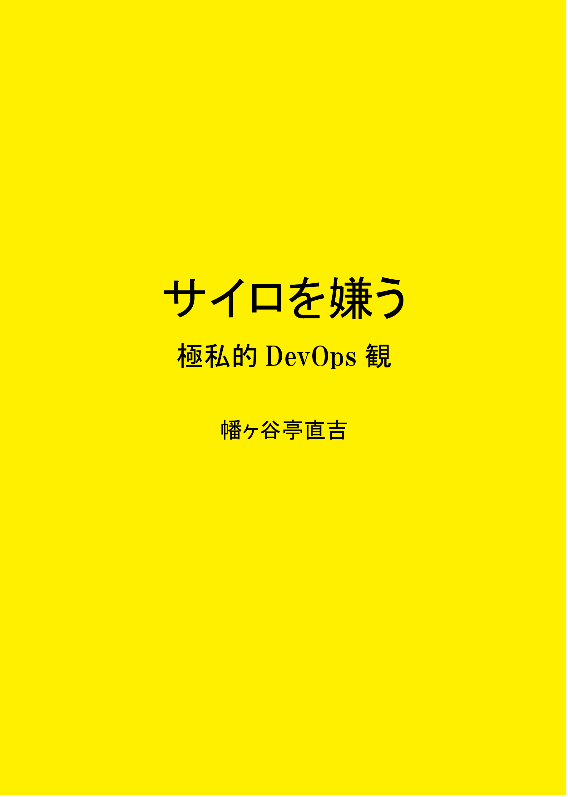

Doujinshi / DevOps
サイロを嫌う
DevOpsの理念を手がかりに、現場に潜む「分断」をどう解消していくかを、極私的な視点から考察した技術同人誌です。
書影

本について
紹介文
本書は、DevOpsの理念を手がかりに、現場に潜む「分断」（サイロ）をどう解消していくかを、極私的な視点から考察した一冊です。
著者は、長年受託開発の現場に身を置き、契約という有期的な関係や工程ごとに細分化された作業に縛られ、仕事にどこか違和感を抱いてきました。
しかし、DevOpsの考え方――とりわけ「共通の価値に向けてサイロを壊し、協力し合う」という本質に触れたことで、そのモヤモヤの正体を言語化できるようになりました。
本書では、著者自身の経験に基づく具体的な「分断」の事例と、それを乗り越えるための気づきをまとめています。